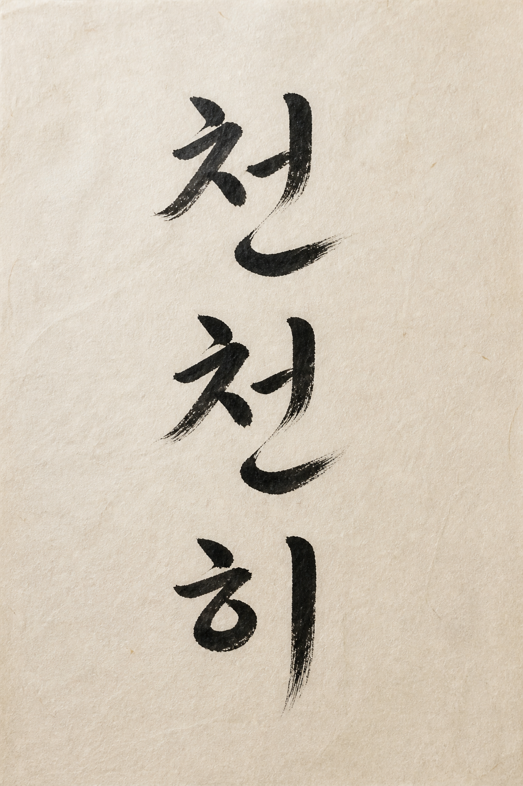

Once a week I choose the word that stayed with me, write it in ink, and photograph it where I wrote it. I hope the mood of the week lasts longer than the handwriting.

천천히 — slowlyWeek 46 · 9 November 2026
Hansunji paper · sumi ink · brush no. 8 — three characters in one breath
The word this week was “천천히”, slowly. When it takes my child five minutes to get their shoes on, I stand beside them, look only at their feet and try not to hurry them. Writing it afterwards seems to hold that feeling in place. In the end the lines I drew without force are the ones that stayed.
Archive
W46천천히 (slowly)9 Nova line drawn without force
W45기다림 (waiting)2 Novthe five minutes of shoes
W44숨 (breath)26 Octone character, one breath
W43저녁 (evening)19 Octthe room turning dark
Photographs of earlier pieces will be added one by one, week by week.